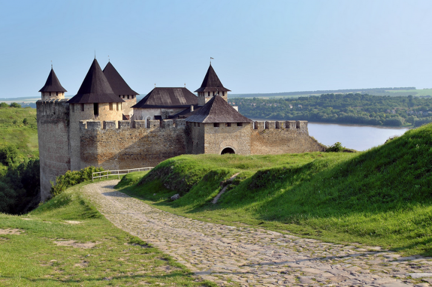
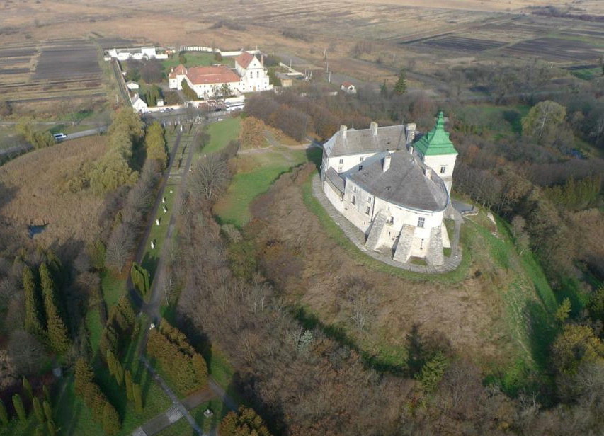

Уперше згаданий в історичних джерелах 1327 року: замок перейшов у володіння князя Юрія II — сина мазовецького князя Тройдена і його дружини Киево-руської княжни Марії (дочки Юрія І), запрошеного боярами на галицько-волинський королівський (князівський) престол після згасання роду Романовичів. Дата дозволяє припустити, як одну із версій, що замок побудований одним із синів галицько-волинського князя Юрія Львовича — Андрієм або Левом. Первинно він був низькою оборонною спорудою овальної форми, що відповідала рельєфу горба. Широкий двір, оточений кам'яною стіною, мав один в'їзд з брамою і вежею. Ці мури частково збереглися як нижній ярус сучасного замку.
У 1806 році замок пережив пожежу. З 1824 році маєтком володіють Літинські, в цей час він зазнав найсуттєвіших руйнувань. Нищівним для могутньої споруди був землетрус 23 січня 1838 року — стіни розтріскались, ряд приміщень став непридатний для житлових цілей. Не менше пошкодили її самі власники. Якось випадково в одній з кімнат було знайдено замурований скарб. І відтоді почалися гарячкові пошуки інших коштовностей: розбивалися стіни з розписами, руйнувалися каміни, знімалися підлоги. У 1875 році завалився колодязь. На кінець XIX ст. Олеський замок перетворився на руїну.
За зібрані 1882 року у Львові кошти замок викупили, і він переходить у руки держави. Були різні думки щодо його використання. Пропонувалося відкрити тут інтернат для студентів учительської семінарії. Галицький сейм вважав за найкраще віддати споруду в розпорядження монастиря. Розглядався також такий варіант: в одній частині приміщення обладнати народну школу, а в другій — музей Яна Собеського. На це одна з газет в 1905 р. писала: «Що народові з того, як он буде мати музей пам'яток по королях польських, а не буде мати хліба, щоби голод заспокоїти?»
Тріснутий корпус ззовні укріпили підпорами. У 1891 році відновили дах та деякі кімнати, і з 1898 року тут відкрилась сільськогосподарська школа. Ще один етап реставрації розпочався 1933 року — тоді повільно відроджували інтер'єри, облаштували браму та дорогу до неї. У 1939 році за радянської влади роботи призупинено, а школу закрито. В роки Другої світової війни тут стояла дивізія А. Власова, а також утримували військовополонених. Пізніше розміщувалися військові склади. В повоєнний час замок занедбали, а серйозна пожежа 1951 року знищила його до голих стін — згоріли дахи з перекриттями та осипалась ліпнина.
Зі стану руїни замок вивела ґрунтовна реставрація і створення музею. З 1954 року приступили до створення проекту реставрації, а 1958 року почалися власне будівельні роботи, в основному завершені до 1965 року. Були плани пристосування твердині під дім відпочинку. Однак замок передано Львівській галереї для музейних цілей. У 1970—1974 роках під керівництвом Бориса Возницького тривало відновлення замку як архітектурної пам'ятки, йому повернено вигляд періоду найбільшого розквіту — кінця XVIII століття. До 1975 року створено експозицію, і музей відкрився. В 1989 році отримав статус музею-заповідника.